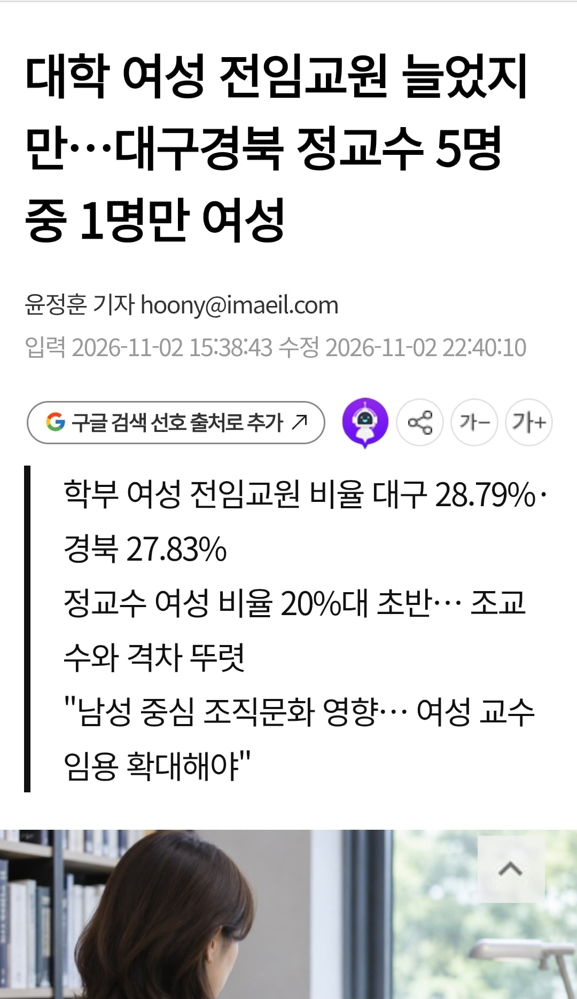

여성 교수 확대해야
댓글
실력으로 말해야지
육군 병장 여성 비율 0%... 안보 무임승차 뚜렷
여성 교수 확대에는 엽떡 마라탕에 만한게 없다
배관공 100명 중에 98명이 남자인데 여성 배관공 비율 늘려야 하는거 아닐까?
성별을 왜 맞춰야 함?
그럼 소득, 연령, 출신지도 다 맞추지 그러냐?
남자 자살률이 높은데 여자는 왜 자살해서 안 맞춤?
여혐 아웃
결과적 평등이 중요하다면 양방향으로.. 수감된 남성이 더 많으니 여성이 감옥가기 쉬운 제도적 보안 필요
개병신논리 진짜...
밑도끝도없이 해줘
무논리는 무적이다
노가다꾼 100명중 여자 비율 무엇???
진짜 이딴 개 씹소리는 왜 꼭 지들 유리한 곳에서만 할까? 그러니까 반발심밖에 안생기지
학대를 왜 해... 동등하게 대하라고...
여자들 군입대부터 좀 해라
혜택만 쳐받으려고 하지말고
의무도 좀 나눠서하자
능력이 되는 여교수가 떨궈진건 문제겠지만
지가 떨어진 이유가 여자라는거 말고 주장할게 없으면 입꾹닫해야지 ㅋㅋㅋㅋ
능력은 출중하단걸 증명해야 여론도 힘을 얻지
압도적인 실적이 있으면 게이도 트젠도 교수할 수 있음 ㅋㅋ
여자라고 못하는게 아니라 그냥 개못해서 교수가 못 되는거일뿐
심지어 20대 중반 교수였나 그런 사람도 봤는데
근데 이거 반대가 현실임
요즘은 여성할당으로 비슷하면 여교수 뽑음
근데 그 차이를 입증하기도 졸라 애매함ㅋㅋ

용접공 남성 95%되는것 같고, 자동차정비공 99%, 검사는 여검사도 좀 있으니 90%, 비계공은 여자팀장 본적있으니 99%, 제강공 100%, 항공기 조종사도 여기장 거진없으니 98%, 철근공 100%, 감정평가사 90%라고 검증은 안됬지만 느낌적 느낌으로 이정도 비율느낌인데
성비 자체가 문제라면 여기도 여성 비율 늘리자고 해야 하는 거 아님?
교수 화이트직군이라 저지랄하는거지
하수 종말처리 시설에 여성비율이 어떨까
현재: 남 80 여 20
-> 남녀비율을 맞추기 위해 여자를 80만큼 뽑는다.
20년 뒤: 남 20 여 80
-> 입 닫고 모른체 함
또 지랄시작
대다수의 사람이 존나 병신같은 논리라고 생각하는데 윗대가리들은 저걸 들어주는게 존나 어이없음ㅋㅋㅋ
확대는 시발 야식이나 처먹고 확대하겠지
곰빠으 노가다하실분만요.
사모래 2톤. 레미탈.65포대. 9시부터 시작.
야리끼리. 함니다. 식대.담베값 지원됨니다. 만은 지원바람니다.
숙련자는.30십만원일당 임니다. 장소는.스타렉스.타고이동하오니. 얀락바람니다
장애인, 몸 아푼분은 좨송함니다.
건장한분만요. 여자도.되지만. 짹짹거리면.
두들겨팸니다.
현장.해보신분만.요.
ㅂㅅ인가ㅋ 또 그 성별 군대나 가고 얘기하자
여성들아 공부좀 열심히 해라
도대체 성비를 맞춰야하는 이유가 뭔데
봊나 성에 집착하네 병신년들
저 소리 나올때마다 신임여교수 실적 보면 서류에서 탈락할 애가 최종으로 가는거 보면 기가 찬다.
어디 지방대학교 얘기가 아니라 과기원에서도 일어나는 일 임
신입 대학원생 애들은 뭔 죄냐
당연히 그 랩에 아무도 안가려고 하고
그럼 당연히 실적 ㅈ박지 ㅋㅋㅋㅋㅋㅋ
그리고 또 탓함
저 소리 하는 애들은 왜 여교수가 없는지 구조를 볼 생각 자체를 안해
공대에 일단 남녀비율부터 보면 학부부터 박살났는데
대학원으로 올라가면 더 박살났는데 아직도 저 지랄을 하고 있음
지원을 자리를 만드는 쪽이 아니라 교수 과정을 밟을 수 있게 지원해주는게 의미있지않냐?
무능한것들이 자리 차지하는게 민주주의 사회에서 가장 주의해야하는건데
짬이 차야 정교수 되는거지 뭔 개소리야